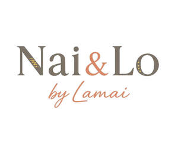

Trade Mark Journal No.2025/024 13 June 2025
UK00004208457 23 May 2025 (8,10,18,20,24,25,28,35,41,43)
Mark 1

Mark 2

- Class 8
- Hand tools; hand implements; hand-operated; cutlery; Baby spoons; baby forks; baby cutlery sets; weaning spoons; non-electric food preparation tools for infants; hand-operated feeding utensils for children; manual baby bottle openers; child-friendly food peeling and slicing tools; toddler-safe hand tools; safety scissors for infants; infant nail clippers; grooming sets for babies; non-electric nasal aspirators; hand tools for early motor skill development in children.
- Class 10
- Devices and articles for nursing infants; baby bottles; breast pumps; pacifiers; teething rings; bottle teats; nipple shields; baby feeding systems; baby bottle sterilisers; anti-colic valves; orthodontic soothers; manual and electric baby feeding devices; thermometers for medical use; nasal aspirators for infants; baby breathing monitors; humidifiers for nursery use with medical function; sleep monitors for babies; infant healthcare kits comprising medical instruments; incubator hoods for babies; dental hygiene devices for babies; baby monitoring systems for medical use.
- Class 18
- Luggage and carrying bags; changing bags; diaper bags; travel bags for baby products; bags adapted for carrying baby bottles and wipes; carry-all totes for infant care items; vanity cases sold empty; cosmetic bags for mothers; textile pouches for baby accessories; handbags; clutch bags; rucksacks adapted for baby travel; pram bags; organiser bags; day bags for parenting use; shoulder bags for infants; imitation leather bags; vegan leather changing bags; luggage tags.
- Class 20
- Furniture; cribs; bassinets; cots; convertible baby beds; toddler beds; Moses baskets; folding portable baby beds; changing tables; dressers for nurseries; high chairs; booster seats for children; rocking chairs; nursery storage units; toy chests; modular nursery furniture; baby loungers; padded infant seating; wall-mounted nursery shelves; bed rails for toddlers; support pillows for babies; changing units; baby furniture made of wood or plastic.
- Class 24
- Household linen; baby blankets; swaddling cloths; muslin cloths; burp cloths; crib sheets; cot bedding sets; fitted sheets for baby mattresses; flat sheets for cribs; hooded baby towels; washcloths for infants; pillowcases for baby pillows; mattress protectors for baby beds; baby sleeping bags; wearable blankets for infants; comforters for babies; crib bumpers; cot canopies; dribble bibs made of textile; nursing covers; baby wraps; nursery curtains; fabric wall hangings for children’s rooms; textile changing mat covers.
- Class 25
- Clothing; footwear; headwear; infant wear; onesies; rompers; bodysuits for babies; footed sleepsuits; baby pyjamas; toddler nightwear; baby socks; baby mittens; baby booties; children’s outerwear; raincoats for children; sun hats for babies; beanies for infants; baby scarves; maternity wear; nursing tops; nursing dresses; maternity leggings; postnatal robes; recovery garments for postpartum use; nursing bras; loungewear for mothers and children; seasonal baby clothing; occasion-wear for infants; coordinated clothing sets for parents and children; swimwear for toddlers.
- Class 28
- Games; toys and playthings; plush toys; stuffed animals for babies; teething toys; educational toys for infants; developmental toys for toddlers; rattles; musical toys for children; stacking blocks; shape sorters; activity gyms; crinkle books; sensory toys; crib mobiles; bath toys; dolls; doll accessories; toy kitchen sets; pretend household toys; building blocks; puzzle toys; ride-on toys; play tents; crib mobiles; toy storage containers sold as part of toy sets; digital learning toys for infants and toddlers.
- Class 35
- Advertising; business management; organization and administration; online retail services relating to baby and maternity goods; retail services for nursery furniture and accessories; online retail services for baby textiles and linens; mail order services relating to maternity clothing and baby products; operation of online marketplaces for parenting-related items; retail services for toys and games; subscription box services featuring baby and parenting items; promotional services relating to third-party branded infant and maternity goods; retail services provided via social media; retail services provided by means of mobile applications.
- Class 41
- Education; educational services relating to baby care and child development; antenatal classes; online publication of blogs and journals in the field of parenting and maternity; parenting workshops; instructional classes for new parents; online non-downloadable video content in the field of parenting and infant wellness; storytelling sessions for children; musical play classes for babies; sensory development workshops for toddlers; educational entertainment for young children; podcasts in the field of family, design and parenting; provision of non-downloadable educational games; training for childcare professionals.
- Class 43
- Services for providing food and drink; temporary accommodation; café services with facilities for babies and children; provision of family-friendly hospitality services; baby-friendly dining establishments; provision of temporary accommodation for parents with infants; letting and or rental of venues for parenting classes and baby events; catering for maternity and parenting events; provision of food and drink adapted for maternal and infant nutrition; hospitality services tailored to young families; pop-up family lounges in retail environments; provision of nursery facilities within hospitality venues; baby-friendly coffee shops; accommodation and food services provided in support of family retreats and mother-and-baby programmes.
NAI & LO LTD
Representative: Pam Rogers